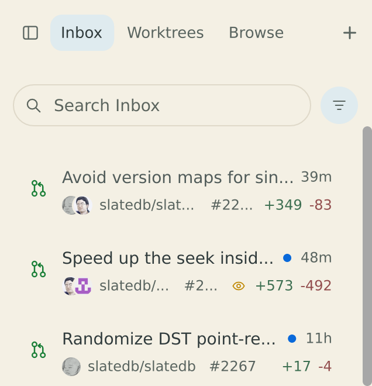

Perch
PerchUsing SSH?Install Perch on your desktop, then set up the host where your code lives.
1. Sign in to the GitHub CLI
Perch runs on macOS (Apple Silicon or Intel) and Linux (x86_64 or arm64 with glibc 2.35+ and GTK 3). Install Git and the GitHub CLI, then run this command.
gh auth loginPerch can use your GitHub CLI login even when you launch it outside a terminal. For token settings and permissions, see Authentication.
2. Install Perch
curl https://perch.code/install.sh | shOn macOS, the installer puts the signed and notarized Perch.app in /Applications. On Linux, it installs Perch in ~/.local/share/perch. Both create a launcher at ~/.local/bin/perch. Set PERCH_NO_MODIFY_PATH=1 if you manage your shell’s PATH yourself.
You can also download the archive for your platform from Releases.
3. Launch Perch and connect a repository
Launch Perch from Applications on macOS or run perch on Linux. Your GitHub inbox opens first.

Press Cmd-, (Ctrl-, on Linux), choose Repositories, and add your local clone. You can also add a repository in config.toml.
4. Set up optional tools
Agents are optional. To use one, sign in on the machine with your checkout.
- Claude Code
2.1.223+(on Linux, also installbubblewrapandsocatfor Claude Code's sandbox) - Codex CLI
0.155.1+ - Antigravity CLI (
agy)1.5.5+ - OpenCode
2.3.0+(uses a separate Perch profile. See OpenCode setup)
For code navigation, Perch offers to install a language server when you need one. It supports Rust, Go, TypeScript, JavaScript, Java, and Python. On external PRs it asks before starting a Rust or Java server.
What to do next
Choose your repository under Browse (Ctrl-3 on macOS). Then try a walkthrough.
Staying up to date
Perch checks for updates in the background. Click Restart to update when a release is ready.